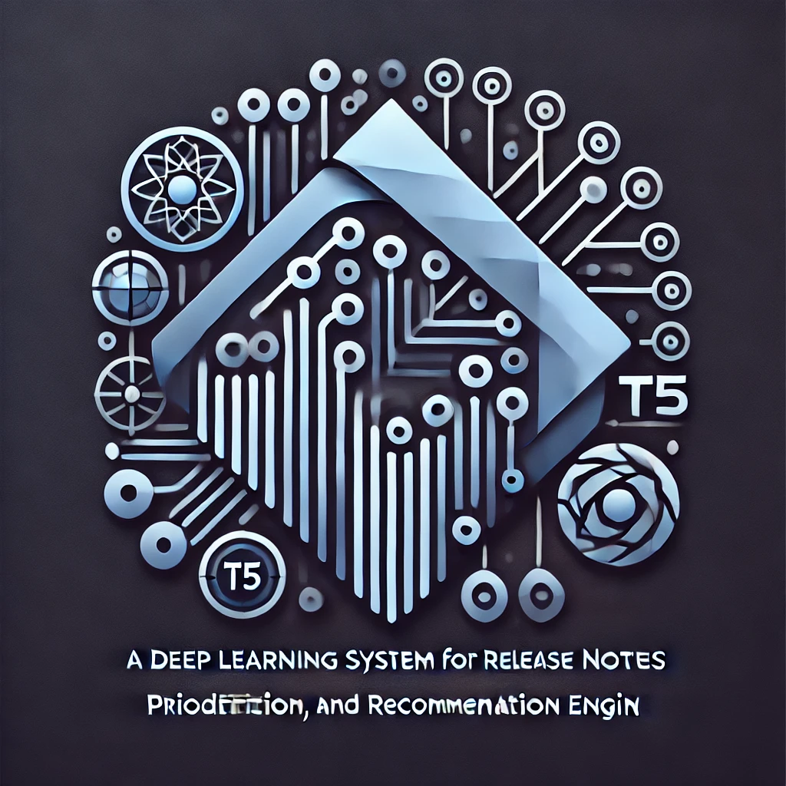
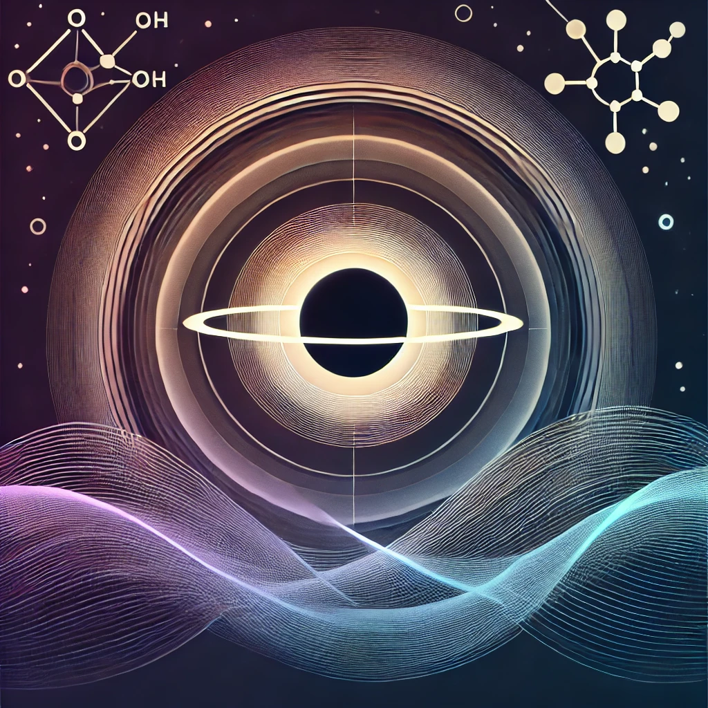
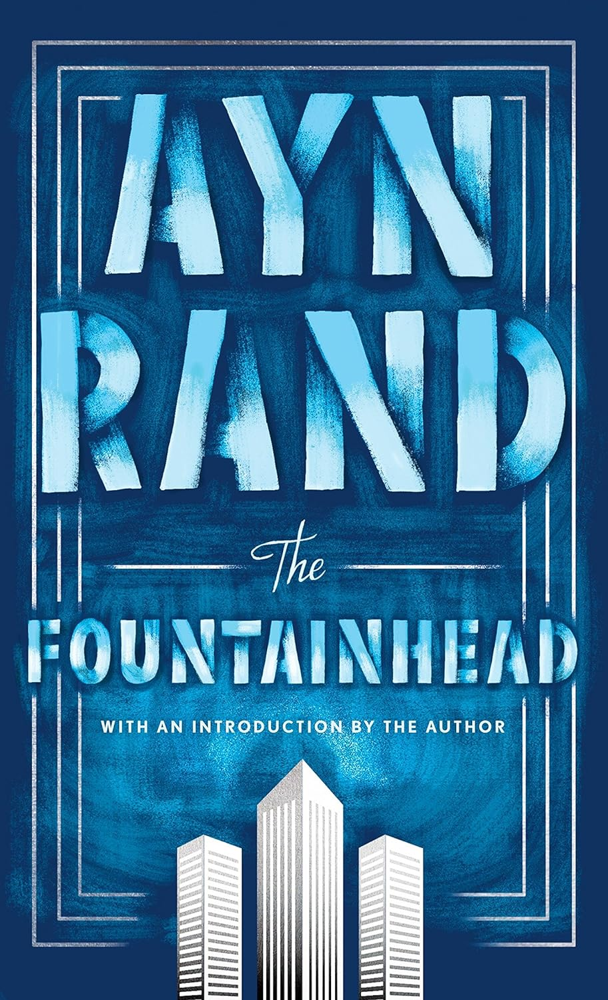
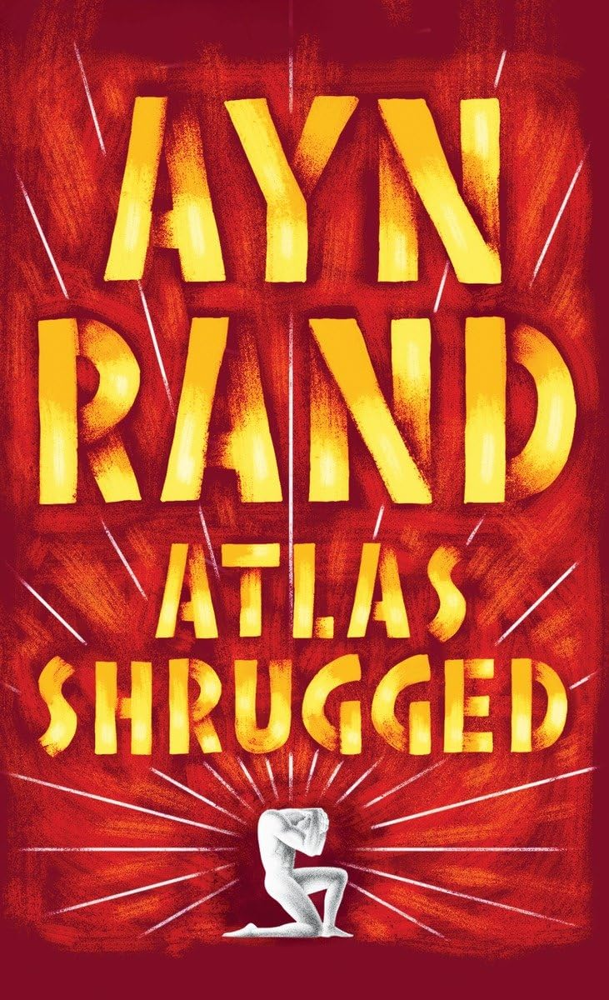
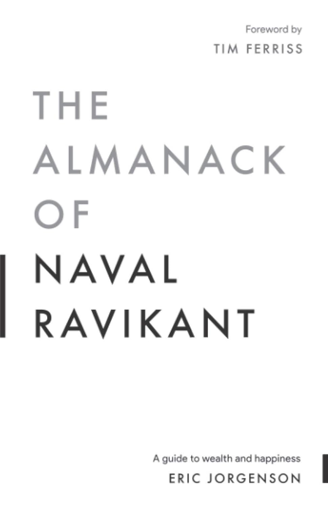
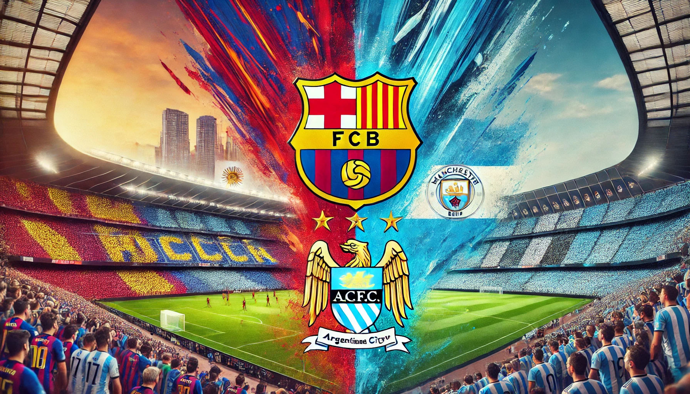
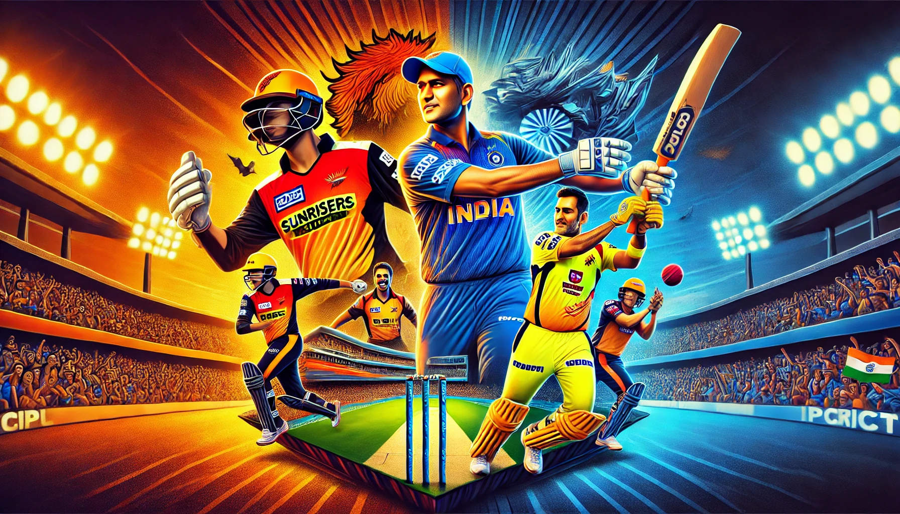
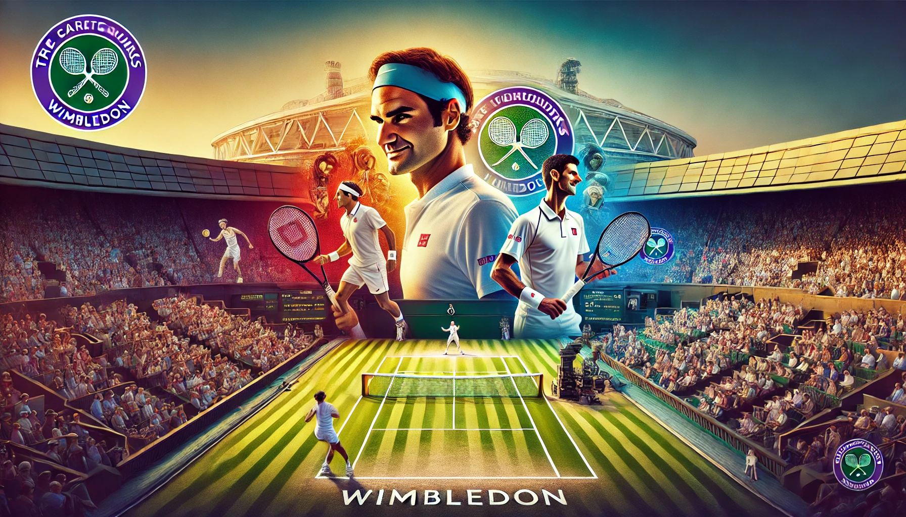
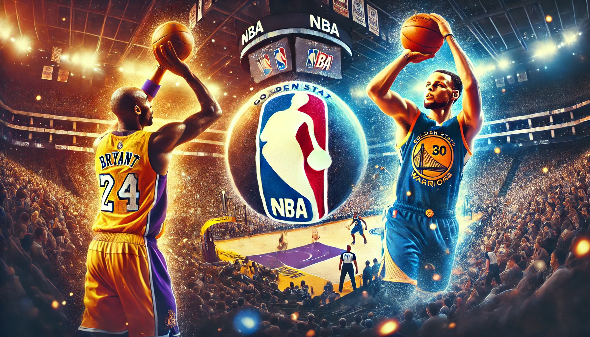
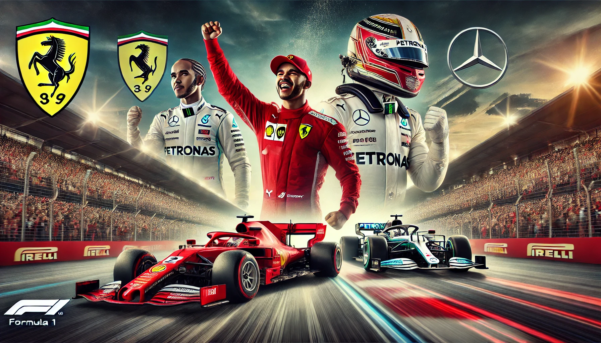

About memy stats
Hey there! I'm Vineeth — AI/ML Engineer, applied researcher, and someone who takes curiosity seriously. Professionally, I build agentic systems, RAG architectures, and multimodal pipelines. On the research side, I'm working on making VLM training more efficient through horizon minimization and reinforcement learning.
What makes me tick goes way beyond code. I'm captivated by astrophysics and the mysteries of the cosmos, grounded by philosophy — from Zarathustra to Meditations — and energized by sports in all forms: F1 for the tactics, football for the passion, tennis for the craft, with basketball and cricket always in the rotation.
I'm a fixture at SF hackathons, a relentless explorer of emerging tech, and someone who genuinely believes the best ideas come from connecting dots across disciplines. Pull up a chair — let's chat.
650+
Projects Completed
15+
Awards Won
30+
Happy Clients
15+
Technologies Proficient In
My Skills
Languages 10
Frameworks & Libraries 36
Agent Frameworks 10
Tools, Infra & Platforms 38
Databases & Vector Stores 11
Models & LLMs 48
Concepts & Methodologies 46
My Timeline
Professional Experience
03/2026 - Present
AI Architect | AI Engineer- AT&T
Developing LangGraph-based AI agents with RAG and structured LLM extraction to automate enterprise pricing workflows and proposal generation for AT&T Business sales.
01/2026 - Present
AI Research Engineer- Nabu Tutor
Architecting an end-to-end multimodal AI system combining real-time visual context ingestion, streaming STT/TTS pipelines, RAG-grounded retrieval, vision-language embedding models, and generative rendering for specialized knowledge domains.
05/2025 - 01/2026
Data Scientist - Google
Designed automation workflows for multimodal image/text classification and data mapping, built GoogleSQL/BigQuery dashboards for leadership, and worked on RAG workflows and AI agents.
01/2025 - 06/2025
Research Scientist | AI Engineer - Aion Labs
Fine-tuning diffusion models with art data/media, building RAG systems and AI agentic workflows.
05/2024 - 08/2024
Data Scientist Intern - Nurjana Technologies
Developed real-time object detection models for space applications using SNN, and integrated QuantizeML & CNN2SNN.
02/2024 - 05/2024
Software Development Engineer | Data Scientist Intern - BambiHealth
Developed and deployed a speech-to-text solution using advanced TTS APIs while enhancing backend stability through rigorous code reviews.
08/2022 - 05/2023
Associate Data Scientist - Foundation AI
Implemented document processing pipelines using Hough Lines Transform, YOLO V5, Lilt, BERT, RoBERTa, and LayoutLM v3.
05/2022 - 09/2022
Junior Data Scientist Intern - Zummit Infolabs
Applied CNNs and PyRadiomics for image segmentation and advanced feature extraction in medical imaging.
04/2021 - 07/2021
Entrepreneur In Residence - Stirring Minds
Led product development using WordPress, Webflow, Discord, and Notion; managed AWS EC2 and integrated marketing tools.
On-Campus Roles & Involvement
08/2024 - Present
Research Assistant - University of the Pacific
Conducting research in ML for cyber-physical security, release note classification, Virtual TA using RAG, exoplanet discovery, and multimodal RAG.
05/2024 - 07/2024
Graduate Teaching Assistant - Deep Learning with PyTorch, UOP
Mentored students in neural networks, model optimization, and deployment while leading interactive workshops.
06/2024 - 08/2024
Co-Lecturer - Summer Program, UOP
Taught Python, NumPy, Pandas, and various ML models through interactive, hands-on sessions.
08/2024 - 12/2024
Graduate Teaching Assistant - Socratic Lab, UOP
Facilitated seminars on Math for Data Science, ML, and Databases; provided mentoring and comprehensive grading.
Volunteering & Leadership
Mar 2024 - Present
President (Pacific Data Science & AI Club) - University of the Pacific
Organizes high-impact events including Data Science Connect, hands-on workshops on building agentic workflows, and engaging meetups with outstanding turnout.
01/2019 - 04/2021
Founder/Coordinator (CODE.EXE - Coding Club of GNIT) - Undergrad
Built and led a coding community by organizing seminars, workshops, and competitions focused on data structures and algorithms.
Academic Programs
08/2023 - 05/2025
Master of Science in Data Science - University of the Pacific
Focus on Advanced ML/Deep Learning, NLP, Data Engineering, and Statistics.
2018 - 2022
Bachelor of Technology in Computer Science & Engineering - JNTU
Covered Machine Learning, Data Structures, Data Mining, AI, Cyber Security, and more.
My PortfolioMy Work
Here is some of my work that I've done in various programming languages.
Research WorkResearch Work
Diffusion-Based Model Fine-Tuning for Domain-Specific Art
Description: Using advanced diffusion models to generate art tailored to specific artistic styles, harnessing LoRA for efficient and memory-friendly fine-tuning.
Professor: Dr. Aurelia M. Davidson
Audit Logging for Cyber-Physical Systems with Machine Learning
Description: Mitigating adversarial effects in robot programming through audit logging and machine learning. The system safeguards against attacks, providing real-time feedback to ensure secure operations.
Professor: Dr. Sepehr Amir-Mohammadian

Release Notes Classification and Prioritization Using Deep Learning
Description: Classifying release notes based on key words and context, prioritizing these updates, and using advanced deep learning models to build a recommendation engine for user upgrades.
Professor: Dr. Solomon Berhe
Virtual TA Using Retrieval-Augmented Generation
Description: Building an intelligent assistant that can help students with course material using RAG and fine-tuned open-source LLM models for security. This assistant answers students' questions contextually based on professor lecture materials.
Professor: Dr. Vivek Pallipuram

Exoplanet Discovery and Analysis
Description: Analyzing light dimming data from stars to discover and characterize exoplanets, calculating planet size, gravity, and other characteristics based on the light fluctuations and rotational speed of the stars.
Professor: Dr. Daniel Jontof-Hutter
Favourite BooksMy Favourites

The Fountainhead by Ayn Rand

Atlas Shrugged by Ayn Rand
Thus Spoke Zarathustra by Friedrich Nietzsche
Man's Search for Meaning by Victor Frankl
Meditations by Marcus Aurelius

The Almanack Of Naval Ravikant
Favourite SportsMy Favourites

Football

Cricket

Tennis

Basketball

Formula 1
Contact MeContact
Let's connect!
Hey there! I'm Vineeth — Data Scientist at Google, passionate about solving problems, building things, and exploring ideas.
Have a project, question, or just want to chat tech? Fill out the form or connect with me below.
San Francisco, CA
Data Scientist @ Google
vineethsai4444@gmail.com
English, Hindi, Telugu, French